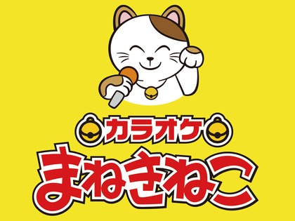
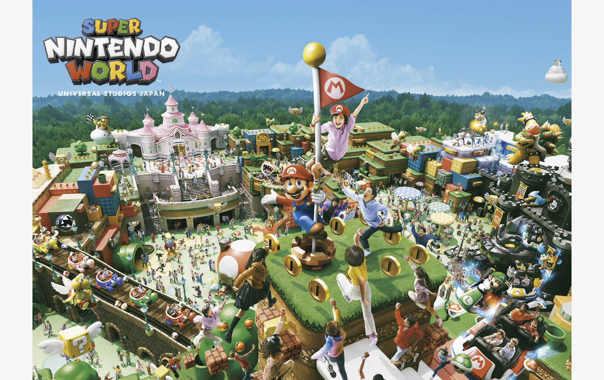

Karaoke
Una de las actividades favoritas para socializar y cantar con amigos.
Festivales (Matsuri)

Coloridos eventos tradicionales con bailes, trajes y fuegos artificiales.
Parques de Diversiones
Japón tiene increíbles parques con montañas rusas extremas u mundos mágicos como Universal Studios y Tokyo Disneyland.
Ver Cerezos

Durante la primavera los cerezos florecen y los parques se llenan de belleza natural.